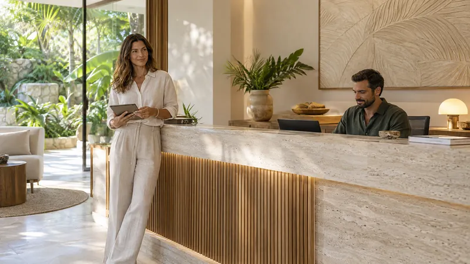

Desarrollo web
Sitios y tiendas a medida, rápidos y fáciles de mantener por tu equipo.
Desarrollamos sitios web, integraciones entre tus herramientas y plataformas de gestión a medida, para negocios que atienden todos los días y para empresas con sistemas propios.
12 proyectos de ejemplo para explorar, en seis sectores

Cupos libres actualizados al reservar o cancelar.
Aviso enviado por WhatsApp y agenda actualizada.

Empezamos por entender cómo trabajas hoy y qué te hace perder tiempo. Después elegimos qué se construye primero.
Sitios y tiendas a medida, rápidos y fáciles de mantener por tu equipo.
Pagos, mensajería, correo y CRM conversando entre sí, sin copiar datos a mano.
Paneles a medida para que tu equipo controle pedidos, citas, inventario y reportes.
Tu sitio deja de ser solo un folleto.

Recoger a las 10:15. Datos de ejemplo.
Un dato se escribe una sola vez.
Menos hojas sueltas, más control.

| 09:00 | Valoración inicial | Confirmada |
| 10:30 | Control | Pendiente |
| 11:15 | Primera consulta | Cupo libre |
Son proyectos conceptuales con datos de muestra, creados para mostrar cómo trabajamos.
Cada sector tiene una web y una automatización que puedes recorrer. Son conceptos con datos de muestra: así puedes ver cómo funcionaría algo parecido para tu negocio.
12 proyectos: 6 páginas web y 6 automatizaciones.
6 proyectos web

Una web con carta propia, fotos de cada bebida y un pedido que llega ordenado a la barra.
Abrir Maré ↗
Casas e interiores con ficha de cada espacio y un formulario para iniciar una solicitud.
Abrir AURA ↗
Fotos de producto, escenas de uso y un carrito que recuerda el acabado elegido.
Abrir WAV ↗
Un centro de bienestar con sus espacios y una agenda para elegir horario.
Abrir ALMA ↗
Una foto por plato, filtros de carta y un pedido que se ajusta antes de enviarlo.
Abrir LUMBRE ↗
Cosmética, hotelería y talleres creativos, cada caso con su propia historia y propuesta.
Abrir el portfolio ↗Prueba los tres acabados de los auriculares de ejemplo. La tienda completa guarda tu elección en el carrito.

6 automatizaciones por sector
Seis procesos que puedes recorrer con datos de ejemplo. Cada uno muestra un resultado, un registro y un siguiente paso.
Elige bebidas, cantidades y hora de recogida. La cola de la barra se actualiza y cada pedido tiene su propio ticket.

Define el espacio, los metros y el plazo. La solicitud se convierte en un brief con checklist y una fase de seguimiento.

Crea un pedido de Wave One y mira cómo cambia el inventario de cada acabado. El comprobante conserva cantidades y total.
Elige servicio, fecha y horario. La agenda ocupa el cupo y prepara una confirmación; al cancelar, el espacio vuelve a quedar libre.

Indica cuántas personas vienen y a qué hora. El sistema asigna una mesa disponible y permite liberar la reserva.

Define objetivo y paquete. El brief prepara una propuesta con alcance y permite recorrer sus fases de revisión.
Tu negocio puede necesitar otra combinación. Empezamos por entender la tuya.
Proyectos y marcas conceptuales, con fotografías creadas con IA. Las automatizaciones usan datos locales de ejemplo; no generan reservas, compras ni mensajes reales.
Con alcance, precio y tiempos acordados antes de empezar.
Recorre un proyecto de ejemplo de principio a fin: una idea, una conversación, una propuesta y algo que puedes probar.
Caso conceptual: Maré. Una cafetería imaginada para mostrar cómo trabajamos contigo.
Imaginemos a Lucía, la dueña de Maré: una cafetería con personalidad que quiere llevar su experiencia a internet.
Maré es un proyecto conceptual. Las personas, la conversación y la marca son ilustrativas.
Si tu pregunta no está aquí, conversemos.
Escríbenos por WhatsApp ↗No. Podemos empezar con lo que tienes y ayudarte a definir qué necesita tu proyecto para dar el primer paso.
Una web presenta tu negocio a quien te visita. Una plataforma de gestión es el sistema que usa tu equipo por dentro: pedidos, citas, inventario, clientes o reportes. Muchos proyectos necesitan las dos y conectadas.
Depende de cada herramienta. Revisamos qué ofrece (conexiones, exportaciones o interfaces de programación) y te decimos qué se puede conectar y cómo antes de acordar el alcance.
Depende de las secciones, el contenido y las funciones. Después de conocer tu proyecto, acordamos una propuesta con alcance, precio y tiempos antes de empezar.
Desde el inicio definimos qué contenidos quieres administrar y elegimos una solución adecuada. También podemos acordar acompañamiento y mantenimiento.